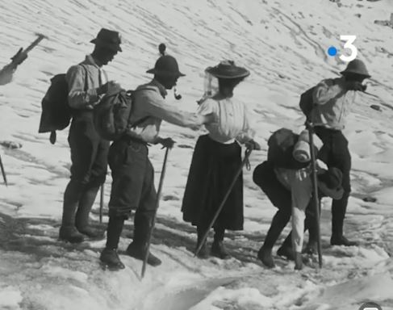
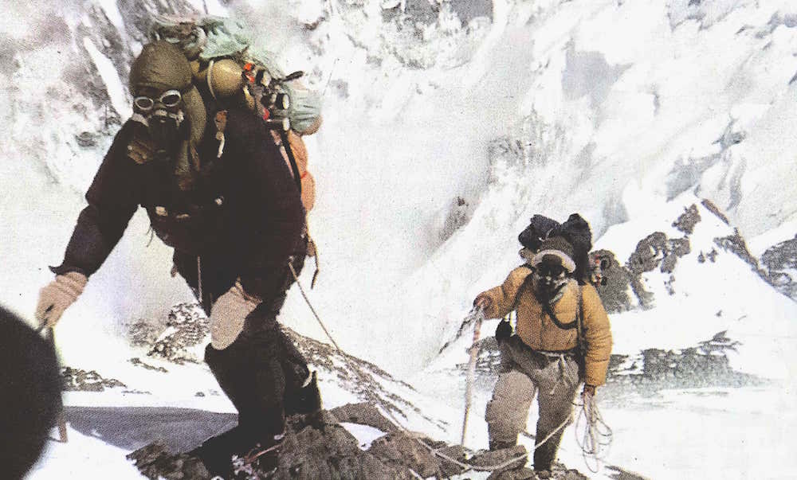
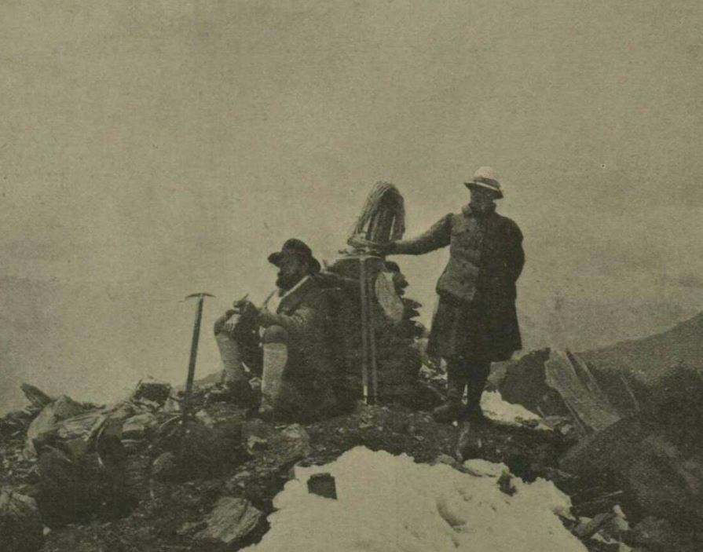

L'escalade sportive aux Jeux Olympiques
JO d'été de Paris 2024
L'escalade aux JO
L'histoire de l'escalade
Les espoirs de 2024
Contact
L'escalade : un sport millénaire qui fait son entrée au Jeaux Olympiques
Une manière d'accerder au sommet avant d'être un sport
Galerie photo
1 / 3

2 / 3

3 / 3

❮
❯